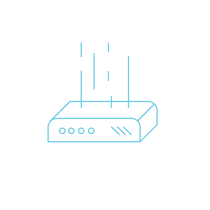

DeFi.org
Boot Sequence
DeFi Belief System
Accelerator Program
The Open Network (TON)
Notifications Protocol
Analytics and Tools
Announcements
About Us
twitter
telegram
github
Announcements
NFT, Crypto & DeFi News Shaping the Next Wave of Innovation
Top DeFi Stories
DeFi.org Applications
DeFi.org Accelerator News
../defi-org-accelerator-polygon-and-orbs-special-defi-round-participating-projects-announcement/index.md
Load More +